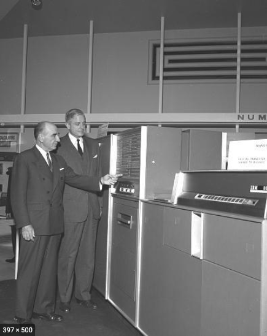
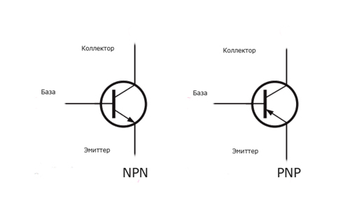
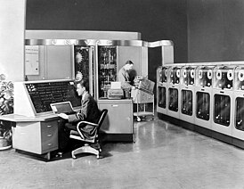

История и создание
Второе поколение ЭВМ охватывает период с конца 1950-х до середины 1960-х годов. Эти машины пришли на смену громоздким ЭВМ первого поколения, заменив вакуумные лампы на более эффективные транзисторы. Это сделало компьютеры меньшими, надежнее и менее энергоемкими.
IBM 608 стал первым полностью транзисторным компьютером, выпущенным в 1957 году. Этот переход от вакуумных ламп к транзисторам ознаменовал начало новой эры в вычислительной технике. Разработка транзисторов была заслугой ученых из Bell Labs — Джона Бардина, Уолтера Браттейна и Уильяма Шокли.
Компьютеры второго поколения использовались для научных и инженерных расчетов, обработки данных в банках и правительственных организациях. Их улучшенная производительность и надежность открыли новые горизонты в автоматизации.
Транзисторы: сердце второго поколения
Транзисторы — это крошечные устройства, которые могут действовать как переключатели или усилители. Их использование привело к созданию более компактных и энергоэффективных компьютеров. В отличие от вакуумных ламп, транзисторы выделяли гораздо меньше тепла и реже выходили из строя.
Массовое производство транзисторов также способствовало снижению стоимости вычислительных машин, делая их доступными для различных организаций. Это стало важным шагом к коммерциализации вычислительных технологий.
Применение и примеры
Одним из самых известных компьютеров второго поколения был IBM 1401, выпущенный в 1959 году. Этот компьютер был настолько успешным, что многие организации использовали его до 1970-х годов. Еще одним примером является UNIVAC II, который предлагал усовершенствования в хранении данных и вычислительных возможностях.
Эти машины применялись в коммерции, оборонной промышленности и даже для ранних попыток автоматизации производства. Второе поколение ЭВМ стало основой для разработки более сложных компьютеров третьего поколения.